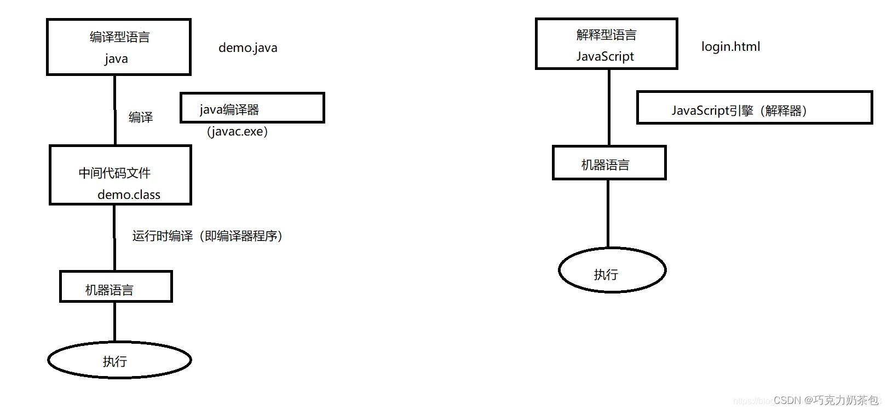
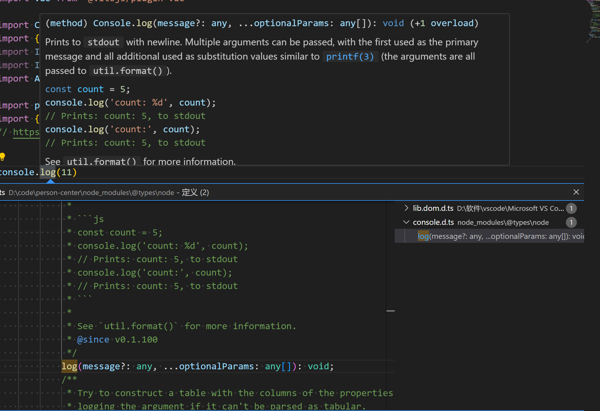
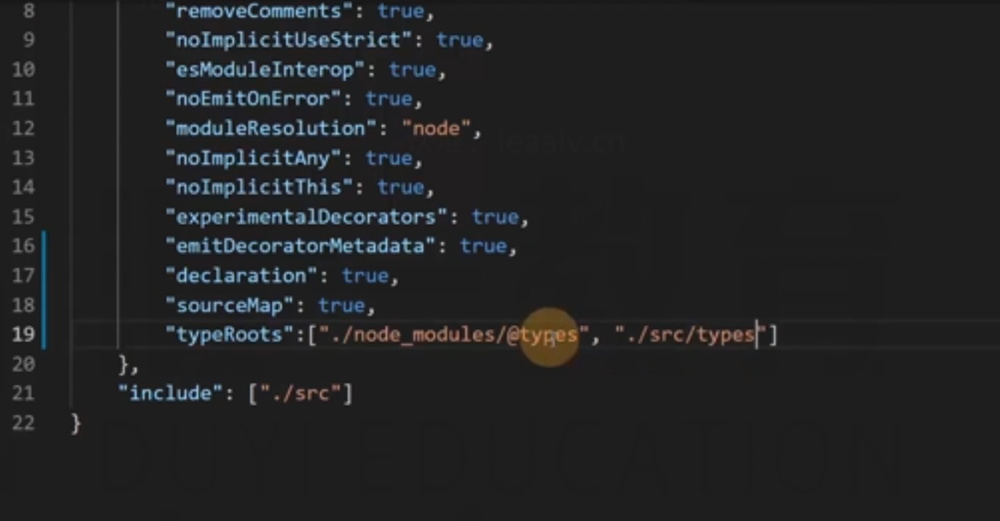
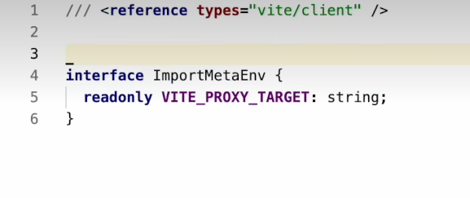

ts 优势
- 更早的发现错误
- 任何位置都有代码提示，增加开发效率
- 类型系统提升了代码的可维护性，重构更容易
- ts 类型推断机制，降低成本
ts 与 js 的区别
| JavaScript | TypeScript |
|---|---|
| 动态语言 | 具有静态语言的特点 |
| 运行时报错 | 编译期间报错 |
| 弱类型语言，没有类型 | 强类型语言，类似 java, C++等，定义时指明类型 |
| 不支持模块、接口、泛型 | 支持模块、接口、泛型 |
| 基本数据类型和引用数据类型 | 更多的基本数据类型和引用数据类型，如 any, never, enum 等 |
| 在浏览器中直接执行 | 编译为 js 后才能在浏览器进行执行 |
JavaScript 是一门解释型语言，没有编译阶段，所以它是动态类型；动态类型是指在运行时才会进行类型检查，这种语言的类型错误往往会导致运行时错误
TypeScript 在运行前需要先编译为 JavaScript，而在编译阶段就会进行类型检查；所以 TypeScript 是静态类型，静态类型是指编译阶段就能确定每个变量的类型，这种语言的类型错误往往会导致语法错误
解释性语言和编译型语言执行方式

无论是浏览器环境，还是 node 环境，无法直接识别 ts 代码
ts 代码需要运行必须通过 tsc 编译成 js
ts 的类型检查都是静态的
静态：类型检查发生的时间，在编译的时候，而非运行时
ts 代码会参与运行的只有装饰器和枚举
安装
可以全局安装，也可以工程内安装
yarn add typescript --dev
安装完成以后就可以使用 tsc 命令来完成将 ts 编译成 js
tsconfig.json 是用来读取 tsc 运行时候的配置，但在使用了配置文件后，使用 tsc 进行编译时，不能跟上文件名，如果跟上文件名，会忽略配置文件。
tsc –watch 使用这个命令会让 ts 代码在改变的时候重新编译（不会运行）
其他库来简化使用 ts 命令的流程
- ts-node
将 ts 代码在内存中完成编译，同时完成运行，用这个命令不会生成真实的 js 文件，但却可以运行（在内存中打包，不需要生成本地文件），使用 ts-node 需要指定入口文件
- nodemon
用于检测文件的变化，只要代码一发生改变，就可以重新运行
文件一变化就执行(–exec)
nodemon --watch src -e ts --exec
-e ts extension,表示要监控的扩展名是 ts
–watch src 只需要监控 src 这个目录
ts-node src/index.ts 使用 ts-node 需要给他一个入口文件（使用这个命令，他会自动去读 tsconfig.json 这个配置）
"scripts": {
"dev": "nodemon --watch src -e ts --exec ts-node src/index.ts",
"build": "tsc"
},
tsconfig.json 配置文件
这个文件是通过 tsc –init 命令生成的
tsconfig.json 是 TypeScript 项目的配置文件。如果一个目录下存在一个 tsconfig.json 文件，那么往往意味着这个目录就是 TypeScript 项目的根目录。
tsconfig.json 包含 TypeScript 编译的相关配置，通过更改编译配置项，我们可以让 TypeScript 编译出 ES6、ES5、node 的代码。
配置详解
配置分类(compilerOptions 选项)
{
"compilerOptions": {
/* 基本选项 */
"target": "es5", // 指定 ECMAScript 目标版本: 'ES3' (default), 'ES5', 'ES6'/'ES2015', 'ES2016', 'ES2017', or 'ESNEXT'
"module": "commonjs", // 指定使用模块: 'commonjs', 'amd', 'system', 'umd' or 'es2015'
"lib": [], // 指定要包含在编译中的库文件
"allowJs": true, // 允许编译 javascript 文件
"checkJs": true, // 报告 javascript 文件中的错误
"jsx": "preserve", // 指定 jsx 代码的生成: 'preserve', 'react-native', or 'react'
"declaration": true, // 生成相应的 '.d.ts' 文件
"sourceMap": true, // 生成相应的 '.map' 文件
"outFile": "./", // 将输出文件合并为一个文件
"outDir": "./", // 指定输出目录
"rootDir": "./", // 用来控制输出目录结构 --outDir.
"removeComments": true, // 删除编译后的所有的注释
"noEmit": true, // 不生成输出文件
"importHelpers": true, // 从 tslib 导入辅助工具函数
"isolatedModules": true, // 将每个文件做为单独的模块 （与 'ts.transpileModule' 类似）.
/* 严格的类型检查选项 */
"strict": true, // 启用所有严格类型检查选项
"noImplicitAny": true, // 在表达式和声明上有隐含的 any类型时报错
"strictNullChecks": true, // 启用严格的 null 检查
"noImplicitThis": true, // 当 this 表达式值为 any 类型的时候，生成一个错误
"alwaysStrict": true, // 以严格模式检查每个模块，并在每个文件里加入 'use strict'
/* 额外的检查 */
"noUnusedLocals": true, // 有未使用的变量时，抛出错误
"noUnusedParameters": true, // 有未使用的参数时，抛出错误
"noImplicitReturns": true, // 并不是所有函数里的代码都有返回值时，抛出错误
"noFallthroughCasesInSwitch": true, // 报告 switch 语句的 fallthrough 错误。（即，不允许 switch 的 case 语句贯穿）
/* 模块解析选项 */
"moduleResolution": "node", // 选择模块解析策略： 'node' (Node.js) or 'classic' (TypeScript pre-1.6)
"baseUrl": "./", // 用于解析非相对模块名称的基目录
"paths": {}, // 模块名到基于 baseUrl 的路径映射的列表
"rootDirs": [], // 根文件夹列表，其组合内容表示项目运行时的结构内容
"typeRoots": [], // 包含类型声明的文件列表
"types": [], // 需要包含的类型声明文件名列表
"allowSyntheticDefaultImports": true, // 允许从没有设置默认导出的模块中默认导入。
/* Source Map Options */
"sourceRoot": "./", // 指定调试器应该找到 TypeScript 文件而不是源文件的位置
"mapRoot": "./", // 指定调试器应该找到映射文件而不是生成文件的位置
"inlineSourceMap": true, // 生成单个 soucemaps 文件，而不是将 sourcemaps 生成不同的文件
"inlineSources": true, // 将代码与 sourcemaps 生成到一个文件中，要求同时设置了 --inlineSourceMap 或 --sourceMap 属性
/* 其他选项 */
"experimentalDecorators": true, // 启用装饰器
"emitDecoratorMetadata": true // 为装饰器提供元数据的支持
}
}
include
指定编译文件默认是编译当前目录下所有的 ts 文件
- 这个是在中括号中填入路径，路径指向的那个 ts 文件会被编译出一个 js 文件出来。这个我们就可以用来编译指定文件
exclude
指定排除的文件
- 跟 include 反过来了，除了写入的路径之外，其他全部编译
target
指定编译 js 的版本例如 es5 es6
- 有些低配置的浏览器是不兼容 es6 的，这个时候我们就可以将其编译成 es5 使其适配
allowJS
是否允许编译 js 文件
- 是否允许 TypeScript 帮你编译 js 文件，默认是不允许的
removeComments
是否在编译过程中删除文件中的注释
rootDir
编译文件的目录
outDir
输出的目录
- 改变输出的目录，也就是编译后输出到这里设置的文件夹目录中
sourceMap
代码源文件
- 这个文件会打包压缩成一行，sourceMap 会记录行数，到时候会比较好找
strict
严格模式
module
默认 common.js 可选 es6 模式 amd umd 等
模块化
TS 中，导入和导出模块，统一使用 ES6 的模块化标准
在转化为 js 的时候可配置导出的时候使用什么模式(es module,commonjs)
类型兼容性
B->A，如果能完成赋值，则 B 和 A 类型兼容
- 基本类型：完全匹配
- 对象类型：鸭子辨型法
鸭子辨型法（子结构辨型法）：目标类型需要某一些特征，赋值的类型只要能满足该特征即可
当直接使用对象字面量赋值的时候，会进行更加严格的判断
type a = {
b: string;
c: number;
};
//不能通过直接字面量赋值，会报错
const d: a = {
b: "2",
c: 9,
h: "e",
};
//但是可以通过变量赋值，通过变量赋值的时候不会那么严格
let c = {
b: "1",
c: 2,
d: 4,
};
let r: a = c;
- 函数类型
一切无比自然
参数：传递给目标函数的参数可以少，但不可以多
返回值：要求返回必须返回；不要求返回，你随意
类型
基本类型
八种内置类型
let str: string = "jimmy";
let num: number = 24;
let bool: boolean = false;
let u: undefined = undefined;
let n: null = null;
let big: bigint = 100n;
let sym: symbol = Symbol("me");
let obj: object = { x: 1 };
null 和 undefined
默认情况下 null 和 undefined 是所有类型的子类型。 就是说你可以把 null 和 undefined 赋值给其他类型。
// null和undefined赋值给string
let str: string = "666";
str = null;
str = undefined;
tip:
如果你在 tsconfig.json 指定了 "strictNullChecks":true ，null 和 undefined 只能赋值给 void 和它们各自的类型。
number 和 bigint
虽然 number 和 bigint 都表示数字，但是这两个类型不兼容。
let big: bigint = 100n;
let num: number = 6;
big = num;
num = big;
会抛出一个类型不兼容的 ts (2322) 错误。
any(任意值)
any 类型就跟原生的是一样的，能够给任意的类型进行定义，所以在 TypeScript 中，任何类型都可以被归为 any 类型。这让 any 类型成为了类型系统的顶级类型 (也被称作全局超级类型 )。
let anys: any = "测试";
anys = [];
anys = 18;
anys = {};
anys = Symbol("666");
作用的地方：
- 有时候，我们会想要为那些在编程阶段还不清楚类型的变量指定一个类型。 这些值可能来自于动态的内容，比如来自用户输入或第三方代码库。 这种情况下，我们不希望类型检查器对这些值进行检查而是直接让它们通过编译阶段的检查。 那么我们可以使用
any类型来标记这些变量 - 在对现有代码进行改写的时候，
any类型是十分有用的，它允许你在编译时可选择地包含或移除类型检查。 你可能认为Object有相似的作用，但是Object类型的变量只是允许你给它赋任意值，却不能够在它上面调用任意的方法，即便它真的有这些方法 - 当你只知道一部分数据的类型时，
any类型也是有用的。 比如，你有一个数组，它包含了不同的类型的数据
unknown 类型
就像所有类型都可以被归为 any，所有类型也都可以被归为 unknown。这使得 unknown 成为 TypeScript 类型系统的另一种顶级类型（另一种的any）
unkonwn 类型是不能够去调用属性跟函数的，它是 any 类型对应的安全类型
let unknow: unknown = {
a: (): number => 123,
};
unknow.a(); //报错
object 类型
object 代表所有非值类型(非原始类型)的类型，例如 数组 对象 函数等，常用于泛型约束
所有原始类型都不支持，所有引用类型都支持
//错误 原始类型(字符串)
let f: object = "努力会获得回报的";
//错误 原始类型(数字)
let g: object = 123;
//错误 原始类型(布尔值类型)
let h: object = true;
//正确 引用类型(数组类型)
let i: object = [123, "学姐学习Vue3", true];
//正确 引用类型(对象类型)
let j: object = {
name: "小满",
identity: ["B站UP主", "二次元", "京东员工", "全栈开发工程师"],
sex: "女",
};
//正确 引用类型(函数类型)
let k: object = () => "不要对自己pua，相信自己是最棒的，尊重自己，人生更精彩";
Object 类型
这个类型是跟原型链有关的，原型链顶层就是 Object，所有值类型和引用类型最终都指向 Object，所以在 TypeScript 中 Object 他包含所有类型。就可以等于任何一个值
//数字类型
let a: Object = 123;
//字符串类型
let b: Object = "小满今天没穿裤子";
//数组类型
let c: Object = [1314, 520];
//对象类型
let d: Object = { name: "草莓", sex: "女", address: "小满微信一群" };
//any或者function
let e: Object = () => "学姐贴贴";
{}字面量类型
与 Object 基本一样 包含所有类型
虽然可以赋值任意类型，赋值结束后，是没办法进行一个修改和增加的操作的
//字面量模式：
let b: {} = { num: 1 };
b.age = 2; //无法增加
void 类型
function logMessage(): void {
console.log("Hello, TypeScript!");
}
never 类型
简单理解，报错类型
never类型通常用于表示不可能出现的情况，它可以用于增强代码的类型安全性和可读性。
当一个变量被推断为never类型时，表示该变量的类型不能是任何其他类型，即不存在任何值与其兼容
type A = string & number; //同时推断A是string和number类型，那显然是不可能的。这时就显示为never类型
//当一个函数抛出异常时，其返回类型为never类型。
//因为抛出异常时，函数永远不会返回任何值(包括void的值)
function xy(): never {
//这里选择never，而不是void
//1.报错
throw new Error("小余");
//2.while死循环
while (true) {
//xxx
}
}
在许多编程语言中，包括 TypeScript，void 类型表示函数不返回任何值。这意味着函数执行完毕后不会返回任何内容，而只是执行某些操作或返回到调用方。
然而，当一个函数抛出异常时，它并没有正常地执行完毕。相反，它会在抛出异常的位置停止执行，并将控制权交回到调用方，因此它不会返回任何值，包括 void 类型的值。
在 TypeScript 中，never 类型表示“永远不会发生”的值。函数的返回类型为 never 时，它表明函数不会正常地返回任何值，而是可能抛出异常、无限循环或导致类型错误等情况。
因此，当一个函数抛出异常时，其返回类型应该是 never，而不是 void。这有助于编译器在类型检查和推断方面更准确地处理异常情况
never 是底层的内容，所以在联合类型上面会有问题
type A = void | number | never; //联合类型中never类型会被忽略掉
type A = "唱" | "跳" | "rap";
function ikun(value: A) {
switch (value) {
case "唱":
break;
case "跳":
break;
case "rap":
break;
default: //兜底逻辑
//最后来到这说明前面都没有生效，那就是超出我们预料的情况，这时候估计就是有问题的
const error: never = value; //看你想写啥来提示自己
break;
}
}
数组类型
声明方式 1：普通声明
//类型加中括号
let arr: number[] = [1, 2, 3, 4]; //数字类型的数组
let arr2: string[] = ["1", "2", "3", "4"]; //字符串类型的数组
let arr3: any[] = [1, "2", true, undefined, [], {}]; //任意类型的数组
声明方式 2：Array<类型>
let arr1: Array<number> = [1, 2, 3, 4, 5];
let arr2: Array<string> = ["1,2,3,4,5"];
let arr3: Array<boolean> = [true];
//泛型数组套娃写法(还能够决定数组里面数组的类型之类的)
let arr4: Array<Array<number>> = [[123], [456]];
声明方式 3：元组类型
数组合并了相同类型的对象，而元组（Tuple）合并了不同类型的对象。
let arr: [string, number] = ["小满", 22]; //这样的方式就叫做元组，定义了每个位置需要满足的不同类型
arr[0].length; //有
arr[1].length; //无，因为上面的定义类型会自动帮我们推断是否有该方法
//Number 类型是没有 length 属性的
越界的元组
当添加的元组越界的时候，越界的类型会被限制为元组类型中每个类型的联合类型
let arr: [string, number] = ["小满", 22]; //这样的方式就叫做元组，定义了每个位置需要满足的不同类型
arr.push(true); //会报错，因为类型boolean参数不能赋值给string|number的类型
//这个就是元组对越界元素的处理
arr.push("111", 2222); //这种就可以
//也可以对二维数组进行限制规定类型
函数类型
可以定义函数的参数和返回值
const fn = (name: string, age: number): string => {
return name + age;
};
let a = fn("小满", 10000); //输入不符合上述参数内定义的类型就会出错
console.log(a); //输出小满10000
interface 形式定义函数
跟定义对象差不多，但是在针对多个参数的时候会更加的方便，且记得引用的时候要写成({xxxx})形式，不然会报错，输出的是数组形式的
interface User {
name: string;
age: number;
}
const fn = (user: User): User => {
//这里的参数填写方式就变得简单了
return user;
};
let a = fn({
name: "'小满",
age: 18,
}); //输入不符合上述参数内定义的类型就会出错
console.log(a); //输出{name:'小满',age:18}
函数重载
重载是方法名字相同，而参数不同，返回类型可以相同也可以不同。
如果参数类型不同，则参数类型应设置为 any。
参数数量不同你可以将不同的参数设置为可选。
为了让编译器能够选择正确的检查类型，它与 JavaScript 里的处理流程相似。 它查找重载列表，尝试使用第一个重载定义。 如果匹配的话就使用这个。 因此，在定义重载的时候，一定要把最精确的定义放在最前面。
function fn(params: number): void; //第一套规则
function fn(params: string, params2: number): void; //第二套规则
function fn(params: any, params2?: any): void {
console.log(params);
console.log(params2);
}
let a = fn(1);
//输出1跟undefined，因为遵循的是第一套规则
let a = fn("1", 1);
//输出"1"跟1，遵循的是第二套规则
扩展类型
枚举类型（注意：会参与运行的类型）
js 中是没有枚举的概念的，TS 帮我们定义了枚举这个类型
enum 关键字定义枚举
枚举类型参与运行
数字定义枚举
默认从 0 开始的
enum Color {
red,
green,
blue,
}
console.log(Color.red, Color.blue, Color.green); //能够得到他们的顺序数字，这里返回0，2，1
增长枚举
能够通过自定义开头决定从哪个数字开始枚举，其他位置的都可以定义，后面的数字就按顺序枚举
enum Color {
red = 2,
green,
blue,
}
console.log(Color.red, Color.blue, Color.green); //能够得到他们的顺序数字，这里返回2，4，3
字符串枚举
字符串枚举的概念很简单。 在一个字符串枚举里，每个成员都必须用字符串字面量，或另外一个字符串枚举成员进行初始化。
由于字符串枚举没有自增长的行为，字符串枚举可以很好的序列化。 换句话说，如果你正在调试并且必须要读一个数字枚举的运行时的值，这个值通常是很难读的
它并不能表达有用的信息，字符串枚举允许你提供一个运行时有意义的并且可读的值，独立于枚举成员的名字。
enum Types {
Red = "red",
Green = "green",
BLue = "blue",
}
异构枚举
枚举可以混合字符串和数字成员
enum Types {
No = "No",
Yes = 1,
}
console.log(Types.NO, Types.Yes);
接口枚举
定义一个枚举 Types 定义一个接口 A 他有一个属性 red 值为 Types.yyds
声明对象的时候要遵循这个规则
enum Color {
no = "NO",
yes = 1,
}
interface A {
red: Color.yes;
}
let B: A = {
red: Color.yes,
//或者直接red:1，只能填入这两个内容其中之一，其他的会报错
};
const 枚举
let 和 var 都是不允许的声明枚举的，只能使用 const
大多数情况下，枚举是十分有效的方案。 然而在某些情况下需求很严格。 为了避免在额外生成的代码上的开销和额外的非直接的对枚举成员的访问，我们可以使用 const 枚举。 常量枚举通过在枚举上使用 const 修饰符来定义
const 声明的枚举会被编译成常量
普通声明的枚举编译完后是个对象
使用 const 枚举没办法反向映射
const enum Types { //有没有const决定是编译成对象还是编译成常量
sucess,
fail,
}
let code: number = 0;
if (code === Types.sucess) {
//是能执行的
console.log("我在人民广场吃炸鸡");
}
反向映射
它包含了正向映射（ name -> value）和反向映射（ value -> name）
要注意的是 不会为字符串枚举成员生成反向映射。
enum Types {
one,
}
let success: number = Types.one;
console.log(one); //读取得出来为0
enum Types {
success,
}
let success: number = Types.success;
let key = Types[success];
console.log(`value---${success}`, `key----${key}`); //value---0,key----success
interface 类型(接口类型)
在 typescript 中，我们定义对象的方式要用关键字 interface（接口），使用 interface 来定义一种约束，让数据的结构满足约束的格式。
interface A {
//这个readonly是只读属性，意思就是说只能读取，不能将其他值赋值给他
readonly name: string;
//这个问号就是可选的意思，条件稍微宽松了一些，下面引用这个age的话有没有这个属性都可以，不会报错
age?: number;
}
let obj: A = {
//这里如果不写name就会报错，因为我们在上面定义了A类型集合，并且在这个变量中引入了(里面必须要有name属性且类型为字符串)
name: "小满嗷嗷叫",
age: 18,
};
注意：这个规定的属性不能多也不能少，参考我上面的案例
无论是 type 还是 Interface 当进行字面量赋值的时候一个也不能多，一个也不能少，但当作变量的时候，可以进行增加（鸭子辩型法）
interface A{
readonly name:string
age:number
}
let obj = {
type:"好人"
name:"小满嗷嗷叫",
age:18
}
//可以这样使用
let c:A = obj
可选属性 – ?操作符
interface A{
readonly name:string
age?:number//这个问号就是可选的意思，条件稍微宽松了一些，下面引用这个age的话有没有这个属性都可以，不会报错
}
let obj:A = {
name:"小满嗷嗷叫"
age:18//age写不写无所谓
}
任意属性 – [propName:string]
需要注意的是，一旦定义了任意属性，那么确定属性和可选属性的类型都必须是它的类型的子集
interface Person {
name: string;
age?: number;
[propName: string]: string | number; //这个属性一旦定义了，引用这个Person的对象就能够写入任意属性，属性的形式主要看冒号后面你定义了什么类型，比如在这里定义的类型就是string和number类型，不是这两者的类型就会报错，包括在Person里面定义除了string跟number之外其他类型也会报错
}
只读属性 – readonly
只读属性必须在声明时或构造函数里被初始化。
interface A {
readonly name: string; //这个readonly是只读属性，意思就是说只能读取，不能将其他值赋值给他
}
let obj: A = {
name: "小满嗷嗷叫",
};
obj.name = "小满芳龄18"; //报错
let name1 = obj.name; //能够读取
继承属性 – extends
interface A {
name: string;
}
interface B extends A {
age: number;
}
let p: B = {
name: "有看到小满的裤子吗？",
age: 88, //两种类型都要写
};
接口还可以进行多继承
interface B extends A, C {}
interface 定义方法
interface User {
name: string;
age: number;
sayHello(): void;
}
let u: User = {
name: "sdfds",
age: 33,
sayHello() {
console.log("asfadasfaf");
},
};
type Condition = (n: number) => boolean;
interface Condition {
(n: number): boolean;
}
function sum(numbers: number[], callBack: Condition) {
let s = 0;
numbers.forEach((n) => {
if (callBack(n)) {
s += n;
}
});
return s;
}
interface 定义类
此能力使用 type 进行类型判断做不到
ts interface 定义类 使用关键字 implements 后面跟 interface 的名字多个用逗号隔开 继承还是用 extends
通过接口去约束类
这代表这个类必须要有这个方法
在转化为 js 后这些都会消失
interface Person {
run(type: boolean): boolean;
}
class Man implements Person {
//会提示我们Man中缺少属性run，但类型Person中需要该属性
}
//通过接口去约束类
interface Person {
run(type: boolean): boolean;
}
interface H {
set(): void;
}
class Man implements Person, H {
//会报错，提示我们缺少set属性
run(type: boolean): boolean {
return type;
}
}
interface 继承类
interface Person {
run(type: boolean): boolean;
}
interface H {
set(): void;
}
class A {
params: string;
constructor(params: string) {
this.params = params;
}
}
//也可以使用继承再使用
class Man extends A implements Person, H {
run(type: boolean): boolean {
return type;
}
set() {
//啥也没有，这就是用接口去描述类
}
}
class A {
a1: string = "";
a2: string = "";
a3: string = "";
}
class B {
b1: number = 0;
b2: number = 0;
b3: number = 0;
}
interface C extends A, B {}
const c: C = {
a1: "",
a2: "",
a3: "",
b1: 0,
b2: 3,
b3: 4,
};
类型别名(type)
type 关键字（可以给一个类型定义一个名字）多用于符合类型，但也可以要求有固定的东西
定义类型别名
type str = string;
let s: str = "我是小满";
console.log(s);
定义函数别名
type str = () => string;
let s: str = () => "我是小满";
console.log(s);
定义联合类型别名
type str = string | number;
let s: str = 123;
let s2: str = "123";
console.log(s, s2);
定义值的别名
type value = boolean | 0 | '213'\
//还可以使用&符号，使用&的话表示需要同时满足
type value2 = {name:string} & B
let s:value = true
//变量s的值 只能是上面value定义的值
类型别名 type 跟 interface 的区别
- 区别 1：interface 是可以继承 type 的，但是 type 是没办法继承 interface 的，只能够使用&进行合并
- 区别 2：interface 是没办法写联合类型的，必须要里面写一个属性才能够去写联合类型(不能直接在外面添加联合类型)，而 type 能够直接写联合类型
- 区别 3：interface 重复写是会合并在一起的，type 不行
区别 1
type s = number[] & B; //使用&合并
interface A extends B {
//interface继承B
}
interface B {}
区别 2
type s = number[] | string; //type直接写联合类型
interface A extends B {
name: string | number; //要在内部属性才能写联合类型
}
interface B {}
区别 3
interface A {
name: string | number;
}
interface A {
age: number;
} //name跟age会进行合并
类型别名高阶用法
extends ：包含的意思
左边的值 会作为右边类型的子类型
type num = 1 extends number ? 1 : 0; //返回1
//其中除了number之外，其他类型包括any、unknown、Object、Number也都是返回1
//类型never返回0
//其中的关系图放在下面，他们(类型)是有层级关系的，下面的图由上往下，层级逐级递减
//never返回不了1是因为他是最底层的，连1都比不过，包含不了，所以返回0
联合类型|交叉类型
联合类型
联合类型能够让我们可选我们自己需要的类型部分，如果需要的类型超过或者达到 2 个，那就可以使用。
那为什么不使用 any 呢？那是因为我们需要的并不是所有类型都能通过，我只希望这两个或者 3 个类型能够通过，如果需要的类型超过或着达到两个都使用 any 的话，那就和 JavaScript 原生没有区别了
//例如我们的手机号通常是13XXXXXXX 为数字类型 这时候产品说需要支持座机
//所以我们就可以使用联合类型支持座机字符串
let myPhone: number | string = "010-820";
//这样写是会报错的应为我们的联合类型只有数字和字符串并没有布尔值
let myPhone: number | string = true; //报错
交叉类型
多种类型的集合，联合对象将具有所联合类型的所有成员
interface Pople {
name: string;
age: number;
}
interface Man {
sex: number;
}
const xiaoman = (man: Pople & Man): void => {
//这里通过了&将Pople跟Man交叉在了一起，则man需要处理Pople也要处理Man。还可以继续跟更多个interface
console.log(man);
};
xiaoman({
name: "小满今天坏掉了",
age: 18,
sex: 1, //如果sex不写是会报错的，会提示你少写了一个sex
});
类型断言
类型断言就是你自己清楚的知道你这个变量需要一个什么类型，抛弃 ts 给你判断出来的类型
语法格式，值 as 类型 或者 <类型>值
需要注意的是，类型断言只能够「欺骗」TypeScript 编译器，无法避免运行时的错误，反而滥用类型断言可能会导致运行时错误
覆盖它的推断，并且能以你任何你想要的方式分析它，这种机制被称为「类型断言」。TypeScript 类型断言用来告诉编译器你比它更了解这个类型，并且它不应该再发出错误
当 S 类型是 T 类型的子集，或者 T 类型是 S 类型的子集时，S 能被成功断言成 T。这是为了在进行类型断言时提供额外的安全性，完全毫无根据的断言是危险的，如果你想这么做，你可以使用 any。
类型断言的用途
（1）将一个联合类型推断为其中一个类型
（2）将一个父类断言为更加具体的子类
（3）将任何一个类型断言为 any(扩大范围)
（4）将 any 断言为一个具体的类型(缩小范围 )
举例 1
原型：
let fn = function(num:number | string):void{
console.log(num.length);//这里会报错，因为我们确实没有.length这个内容
}
fn("12345")
断言写法
let fn = function(num:number | string):void{
console.log((num as string).length);//用括号括起来，as断言他是string类型
}
fn("12345")//这样会打印出5
fn(12345)//这样会打印出undefined
举例 2
interface A {
run: string;
}
interface B {
build: string;
}
let fn = (type: A | B) => {
console.log((<A>type).run);
};
//不能这样用
fn({
build: "123", //这里是没办法传过去的，断言是不能够滥用的，因为我们确实没有.run这个内容
});
举例 3
使用 any 临时断言
window.abc = 123(
//这样写会报错因为window没有abc这个东西
window as any
).abc = 123;
//可以使用any临时断言在 any 类型的变量上，访问任何属性都是允许的。
举例 4
将 something 断言为 boolean 虽然可以通过编译，但是并没有什么用 并不会影响结果，因为编译过程中会删除类型断言
function toBoolean(something: any): boolean {
return something as boolean;
}
let bbb = toBoolean(1);
console.log(bbb);
// 返回值为 1
//
as const
是对字面值的断言，与 const 直接定义常量是有区别的
如果是普通类型跟直接 const 声明是一样的
const names = "小满";
names = "aa"; //无法修改
let names2 = "小满" as const;
names2 = "aa"; //无法修改
// 数组
let a1 = [10, 20] as const;
const a2 = [10, 20];
a1.unshift(30); // 错误，此时已经断言字面量为[10, 20],数据无法做任何修改
a2.unshift(30); // 通过，没有修改指针。之所以没有修改指针是因为const的性质是决定了指针指向的位置是已经固定不会发生改变的了，这个30想要添加进去除非直接修改存储值的地方
内置对象
ECMAScript 的内置对象
JavaScript 中有很多内置对象，它们可以直接在
TypeScript中当做定义好了的类型。
**Boolean**、Number、**String**、**RegExp**、**Date**、**Error**
let b: Boolean = new Boolean(1);
console.log(b);
let n: Number = new Number(true);
console.log(n);
let s: String = new String("小满今天穿白丝");
console.log(s);
let d: Date = new Date();
console.log(d);
let r: RegExp = /^1/;
console.log(r);
let e: Error = new Error("error!");
console.log(e);
DOM 和 BOM 的内置对象
**Document**、**HTMLElement**、**Event**、**NodeList**** 等**
const list: NodeList = document.querySelectorAll("#list li");
console.log(list);
//NodeList 实例对象是一个类似数组的对象，它的成员是节点对象。Node.childNodes、document.querySelectorAll () 返回的都是 NodeList 实例对象。 [1] NodeList 对象代表一个有序的节点列表。
const body: HTMLElement = document.body;
console.log(body);
const div: HTMLDivElement = document.querySelector("div");
console.log(div);
document.body.addEventListener("click", (e: MouseEvent) => {
console.log(e);
});
//promise
function promise1(): Promise<number> {
//Promise是类型,number是泛型
return new Promise<number>((resolve, rejects) => {
resolve(1); //如果不进行断言的话会报错
});
}
promise().then((res) => {
console.log(res); //返回1，这里会提示你res应该输入number类型
});
类型推论
我声明了一个变量但是没有定义类型
TypeScript 会在没有明确的指定类型的时候推测出一个类型，这就是类型推论(TS 本身支持的功能)
let str = "小满";
str = 123; //会报错，虽然我们没用明确限制类型，但是TS编辑器会自动推论为string类型。就不能够在赋值给别的类型
如果你声明变量没有定义类型也没有赋值这时候 TS 会推断成 any 类型可以进行任何操作
let str; //为any类型
str = 123;
str = "马杀鸡";
str = false;
str = [];
泛型
泛型简单来说就是类型变量，在 ts 中存在类型，如 number、string、boolean 等。泛型就是使用一个类型变量来表示一种类型，类型值通常是在使用的时候才会设置。泛型的使用场景非常多，可以在函数、类、interface 接口中使用
TypeScript 中不建议使用 any 类型，不能保证类型安全，调试时缺乏完整的信息。
TypeScript 可以使用泛型来创建可重用的组件。支持当前数据类型，同时也能支持未来的数据类型。扩展灵活，可以在编译时发现类型错误，从而保证了类型安全。
无泛型用法
//数字类型
function num(A: number, B: number): Array<number> {
//Array<number>为希望返回number类型的数组
return [A, B];
}
num(6, 9);
//字符串类型
function str(A: string, B: string): Array<string> {
//Array<number>为希望返回number类型的数组
return [A, B];
}
str("小满", "穿女装");
一个笨的方法就像上面那样，也就是说 JS 提供多少种类型，就需要复制多少份代码，然后改下类型签名。这对程序员来说是致命的。这种复制粘贴增加了出错的概率，使得代码难以维护，牵一发而动全身。并且将来 JS 新增新的类型，你仍然需要修改代码，也就是说你的代码对修改开放，这样不好。
如果你使用 any 的话，怎么写都是 ok 的， 这就丧失了类型检查的效果。实际上我知道我传给你的是 string，返回来的也一定是 string，而 string 上没有 toFixed 方法，因此需要报错才是我想要的。也就是说我真正想要的效果是：当我用到 id 的时候，你根据我传给你的类型进行推导。比如我传入的是 string，但是使用了 number 上的方法，你就应该报错。
使用泛型优化
为了解决上面的这些问题，我们使用泛型对上面的代码进行重构。和我们的定义不同，这里用了一个类型 T，这个 T 是一个抽象类型，只有在调用的时候才确定它的值，这就不用我们复制粘贴无数份代码了。
其中 T 代表 Type，在定义泛型时通常用作第一个类型变量名称。但实际上 T 可以用任何有效名称代替。除了 T 之外，以下是常见泛型变量代表的意思
- K（Key）：表示对象中的键类型（仅含义）
- V（Value）：表示对象中的值类型（仅含义）
- E（Element）：表示元素类型（仅含义）
泛型并不是说一定要使用 K,V,E;实际上使用任何类型都可以，只是大家习惯用这几个字母
function add<T>(a: T, b: T): Array<T> {
//通常定义的时候类型是不明确的，所以一般使用T来定义
return [a, b];
}
add<number>(1, 2); //1对应a，2对应b、返回的都是number类型
add<string>("1", "2"); //这个时候，我们只需要改动这个string，传递到上面的时候就会自动推断为string类型了
//甚至我们可以简写
add(1, 2);
add("1", "2"); //编辑器会自动推断类型，但最好还是写一下，如果你知道你具体需要的是什么的话
//对泛型进行总结就是：定义前不明确类型，使用的时候再明确类型，能够给我们保留有足够的自由度，又不会像any丧失类型检查的效果
我们也可以使用不同的泛型参数名，只要在数量上和使用方式上能对应上就可以。
function Sub<T, U>(a: T, b: U): Array<T | U> {
//这个T跟U随便起名字都行，没有强制规范
const params: Array<T | U> = [a, b];
return params;
}
Sub<Boolean, number>(false, 1); //我们这里就将其定义为布尔值类型跟数字类型
定义泛型接口
声明接口的时候 在名字后面加一个<参数>
使用的时候传递类型
interface MyInter<T> {
(arg: T): T;
}
function fn<T>(arg: T): T {
return arg;
}
let result: MyInter<number> = fn;
result(123);
对象字面量泛型
let foo: { <T>(arg: T): T };
foo = function <T>(arg: T): T {
return arg;
};
foo(123);
泛型类
声明方法跟函数类似名称后面定义<类型>
使用的时候确定类型 new Sub()
//定义泛型的一个类
class Sub<T> {
attr: T[] = []; //这里的:只是普通的：
add(a: T): T[] {
return [a];
}
}
let s = new Sub<number>(); //这里已经使用泛型固定为number了
s.attr = [123]; //正常运行
s.attr = ["123"]; //报错
s.add(123); //也是只能传数字
let str = new Sub<string>(); //这里已经使用泛型固定为number了
str.attr = [123]; //报错
str.attr = ["123"]; //正常运行
str.add("123"); //也是只能传字符串
console.log(s, str);
泛型约束（各类约束用法）
我们期望在一个泛型的变量上面，获取其 length 参数，但是，有的数据类型是没有 length 属性的
function getLegnth<T>(arg: T) {
return arg.length;
}
- 这个时候，我们就可以对其进行约束
interface Len{
length:number
}
<T extends Len> 这句话就等于说是给T下了定义，后面再用到T的时候都要符合这个规则
function getLegth<T extends Len>(arg:T) {//使用接口让泛型T继承了Len
return arg.length
}
getLength(1)//这个时候我们这样使用就会提示我们类型"number"的参数不能赋给"Len"的参数
//我们依次对数组、字符串、布尔值都进行尝试，分别为可以、可以、不可以
类型演算
根据已知的信息，计算出新的类型
typeof
typeof 的主要用途是在类型上下文中获取变量或者属性的类型（获取别的变量的 ts 类型）
interface Person {
name: string;
age: number;
}
const sem: Person = { name: "semlinker", age: 30 };
type Sem = typeof sem; // type Sem = Person
在上面代码中，我们通过 typeof 操作符获取 sem 变量的类型并赋值给 Sem 类型变量，之后我们就可以使用 Sem 类型：
const lolo: Sem = { name: "lolo", age: 5 };
你也可以对嵌套对象执行相同的操作：
const Message = {
name: "jimmy",
age: 18,
address: {
province: "四川",
city: "成都",
},
};
type message = typeof Message;
//相当于
type message = {
name: string,
age: number,
address: {
province: string,
city: string,
},
};
此外，typeof 操作符除了可以获取对象的结构类型之外，它也可以用来获取函数对象的类型，比如：
function toArray(x: number): Array<number> {
return [x];
}
type Func = typeof toArray; // -> (x: number) => number[]
当 typeof 作用于类的时候，得到的类型，是该类的构造函数当 typeof 作用于类的时候，得到的类型，是该类的构造函数
class User{ loginid:string, loginpwd:string, } function createUser(cls: typeof
User) :User{ } // User 表示用户的类，构造函数 // new User
表示用户对象，通过构造函数创建的对象 // User 表示构造函数 // :User
ts表达的是一个用户对象
typeof User 表示类本身
User 表达的是一个用户对象
ts 表达”类(构造函数)”类型的方法
class User{
loginid:string,
loginpwd:string,
}
//第一种
type class1 = typeof User;
//第二种 构造函数约束
type class2 = new () => User
keyof
作用于类、接口、类型别名，用于获取其他类型中的所有成员名组成的联合类型
该操作符可以用于获取某种类型的所有键，其返回类型是联合类型。
在 TypeScript 中支持两种索引签名，数字索引和字符串索引：
interface StringArray {
// 字符串索引 -> keyof StringArray => string | number
[index: string]: string;
}
interface StringArray1 {
// 数字索引 -> keyof StringArray1 => number
[index: number]: string;
}
interface Person {
name: string;
age: number;
}
type K1 = keyof Person; // "name" | "age"
type K2 = keyof Person[]; // "length" | "toString" | "pop" | "push" | "concat" | "join"
type K3 = keyof { [x: string]: Person }; // string | number
为了同时支持两种索引类型，就得要求数字索引的返回值必须是字符串索引返回值的子类。其中的原因就是当使用数值索引时，JavaScript 在执行索引操作时，会先把数值索引先转换为字符串索引。所以 keyof { [x: string]: Person } 的结果会返回 string | number。
keyof 也支持基本数据类型：
let K1: keyof boolean; // let K1: "valueOf"
let K2: keyof number; // let K2: "toString" | "toFixed" | "toExponential" | ...
let K3: keyof symbol; // let K1: "valueOf"
keyof 的作用
JavaScript 是一种高度动态的语言。有时在静态类型系统中捕获某些操作的语义可能会很棘手。以一个简单的 prop 函数为例：
function prop(obj, key) {
return obj[key];
}
该函数接收 obj 和 key 两个参数，并返回对应属性的值。对象上的不同属性，可以具有完全不同的类型，我们甚至不知道 obj 对象长什么样。
那么在 TypeScript 中如何定义上面的 prop 函数呢？我们来尝试一下：
function prop(obj: object, key: string) {
return obj[key];
}
在上面代码中，为了避免调用 prop 函数时传入错误的参数类型，我们为 obj 和 key 参数设置了类型，分别为 {} 和 string 类型。然而，事情并没有那么简单。
针对上述的代码，TypeScript 编译器会输出以下错误信息：
Element implicitly has an 'any' type because expression of type 'string' can't be used to index type '{}'.
元素隐式地拥有 any 类型，因为 string 类型不能被用于索引 {} 类型。要解决这个问题，你可以使用以下非常暴力的方案：
function prop(obj: object, key: string) {
return (obj as any)[key];
}
很明显该方案并不是一个好的方案，我们来回顾一下 prop 函数的作用，该函数用于获取某个对象中指定属性的属性值。因此我们期望用户输入的属性是对象上已存在的属性，那么如何限制属性名的范围呢？这时我们可以利用本文的主角 keyof 操作符：
function prop<T extends object, K extends keyof T>(obj: T, key: K) {
return obj[key];
}
在以上代码中，我们使用了 TypeScript 的泛型和泛型约束。首先定义了 T 类型并使用 **extends** 关键字约束该类型必须是 object 类型的子类型，然后使用 **keyof** 操作符获取 T 类型的所有键，其返回类型是联合类型，最后利用 **extends** 关键字约束 K 类型必须为 **keyof T** 联合类型的子类型。 是骡子是马拉出来遛遛就知道了，我们来实际测试一下：
type Todo = {
id: number;
text: string;
done: boolean;
}
const todo: Todo = {
id: 1,
text: "Learn TypeScript keyof",
done: false
}
function prop<T extends object, K extends keyof T>(obj: T, key: K) {
return obj[key];
}
const id = prop(todo, "id"); // const id: number
const text = prop(todo, "text"); // const text: string
const done = prop(todo, "done"); // const done: boolean
很明显使用泛型，重新定义后的 prop<T extends object, K extends keyof T>(obj: T, key: K) 函数，已经可以正确地推导出指定键对应的类型。那么当访问 todo 对象上不存在的属性时，会出现什么情况？比如：
const date = prop(todo, "date");
对于上述代码，TypeScript 编译器会提示以下错误：
Argument of type '"date"' is not assignable to parameter of type '"id" | "text" | "done"'.
这就阻止我们尝试读取不存在的属性。
in
该关键字往往和 keyof 联用，限制某个索引类型的取值范围。
interface Person {
name: string;
age: string;
}
约束:属性名是一个字符串，属性值也得是一个字符串
type Obj = {
[p: string]:string
}
进一步约束属性名只能是name或者age,采用in关键字
type Obj = {
[p in "name" | "age" ]:string
}
//相等于
type Obj = {
name:string,
age:string,
}
进一步,相等于修改了Person的age属性类型(数字变成了字符串)
type Obj = {
[p in keyof Person ]:string
}
复制一个Person类型
type Obj = {
[p in keyof Person]: Person[p]
}
复制一个Person类型 全部只读
type ObjReadonly = {
readonly [p in keyof Person]: Person[p]
}
复制一个Person类型 全部可选
type ObjPartial = {
[p in keyof Person]?: Person[p]
}
进一步处理的不止是Person,采用泛型
type String<T> = {
[p in keyof T]: string
}
type Readonly<T> = {
readonly [p in keyof T]: T[p]
}
type Partial<T> = {
[p in keyof T]?: T[p]
}
in 用来遍历联合类型：
type Keys = "a" | "b" | "c"
type Obj = {
[p in Keys]: any
} // -> { a: any, b: any, c: any }
interface Article { title: string publishDate: Date }
//将User的所有属性值类型变成字符串，得到一个新类型 type String<T>
= { [p in keyof T]: string } //先执行keyof
T得到所有的key，然后p的取值来自这里面的key const u: String
<article>= { title: "Sfsdf", publishDate: "sdf" }</article></T
>
infer
infer 关键字通常与条件类型一起使用，用于推断类型参数的值。它的语法形式为 infer TypeParameter，其中 “TypeParameter” 是一个占位符，用于表示待推断的类型。
下面是一个示例，展示了如何使用 “infer” 关键字：
type ExtractReturnType<T> = T extends (...args: any[]) => infer R ? R : never;
function greet(): string {
return "Hello!";
}
type ReturnTypeOfGreet = ExtractReturnType<typeof greet>; // string
在上面的代码中，我们定义了一个类型别名 ExtractReturnType
然后，我们定义了一个函数 greet，它返回一个字符串类型。
最后，我们使用 ExtractReturnType 来提取函数 greet 的返回类型，并将其赋值给 ReturnTypeOfGreet。根据推断结果，ReturnTypeOfGreet 的类型将为 string。
extends
有时候我们定义的泛型不想过于灵活或者说想继承某些类等，可以通过 extends 关键字添加泛型约束。
interface Lengthwise {
length: number;
}
function loggingIdentity<T extends Lengthwise>(arg: T): T {
console.log(arg.length);
return arg;
}
现在这个泛型函数被定义了约束，因此它不再是适用于任意类型：
loggingIdentity(3); // Error, number doesn't have a .length property
这时我们需要传入符合约束类型的值，必须包含 length 属性：
loggingIdentity({ length: 10, value: 3 });
索引类型
在实际开发中，我们经常能遇到这样的场景，在对象中获取一些属性的值，然后建立对应的集合。
let person = {
name: "musion",
age: 35,
};
function getValues(person: any, keys: string[]) {
return keys.map((key) => person[key]);
}
console.log(getValues(person, ["name", "age"])); // ['musion', 35]
console.log(getValues(person, ["gender"])); // [undefined]
在上述例子中，可以看到 getValues (persion, [‘gender’]) 打印出来的是 [undefined]，但是 ts 编译器并没有给出报错信息，那么如何使用 ts 对这种模式进行类型约束呢？这里就要用到了索引类型，改造一下 getValues 函数，通过 索引类型查询和 索引访问 操作符：
function getValues<T, K extends keyof T>(person: T, keys: K[]): T[K][] {
return keys.map(key => person[key]);
}
interface Person {
name: string;
age: number;
}
const person: Person = {
name: 'musion',
age: 35
}
getValues(person, ['name']) // ['musion']
getValues(person, ['gender']) // 报错：
// Argument of Type '"gender"[]' is not assignable to parameter of type '("name" | "age")[]'.
// Type "gender" is not assignable to type "name" | "age".
映射类型
根据旧的类型创建出新的类型，我们称之为映射类型
比如我们定义一个接口
interface TestInterface {
name: string;
age: number;
}
我们把上面定义的接口里面的属性全部变成可选
// 我们可以通过+/-来指定添加还是删除
type OptionalTestInterface<T> = {
[p in keyof T]+?:T[p]
}
type newTestInterface = OptionalTestInterface<TestInterface>
// type newTestInterface = {
// name?:string,
// age?:number
// }
比如我们再加上只读
type OptionalTestInterface<T> = {
+readonly [p in keyof T]+?:T[p]
}
type newTestInterface = OptionalTestInterface<TestInterface>
// type newTestInterface = {
// readonly name?:string,
// readonly age?:number
// }
由于生成只读属性和可选属性比较常用，所以 TS 内部已经给我们提供了现成的实现 Readonly / Partial, 会面内置的工具类型会介绍（等于说是这是工具类型的实现）
Class 类
面向对象
TS 为前端面向对象开发带来了契机
JS 语言没有类型检查，如果使用面向对象的方式开发，会产生大量的接口，而大量的接口会导致调用复杂度剧增，这种复杂度必须通过严格的类型检查来避免错误，尽管可以使用注释或文档或记忆力，但是它们没有强约束力。
TS 带来了完整的类型系统，因此开发复杂程序时，无论接口数量有多少，都可以获得完整的类型检查，并且这种检查是据有强约束力的。
面向对象中有许多非常成熟的模式，能处理复杂问题
在过去的很多年中，在大型应用或复杂领域，面向对象已经积累了非常多的经验。
是一种编程思想，它提出一切以类对切入点思考问题。
其他编程思想：面向过程、函数式编程
学开发最重要最难的是什么？思维
最重要的也是思维，代码是最不值钱的，脑中的知识才值钱
面向过程：以功能流程为思考切入点，不太适合大型应用
函数式编程：以数学运算为思考切入点
面向对象：以划分类为思考切入点。类是最小的功能单元
类：可以产生对象的模板。
成员的重写
重写(override)：子类中覆盖父类的成员
子类成员不能改变父类成员的类型（修饰符可以改，比如 readonly）
无论是属性还是方法，子类都可以对父类的相应成员进行重写，但是重写时，需要保证类型的匹配。
注意 this 关键字：在继承关系中，this 的指向是动态——调用方法时，根据具体的调用者确定 this 指向
super 关键字：在子类的方法中，可以使用 super 关键字读取父类成员
构造函数创建
ES6提供了更接近传统语言的写法，引入了 Class（类）这个概念，作为对象的模板。通过 class 关键字，可以定义类。基本上，ES6 的 class 可以看作只是一个语法糖，它的绝大部分功能，ES5 都可以做到，新的 class 写法只是让对象原型的写法更加清晰、更像面向对象编程的语法而已。上面的代码用 ES6 的 “类” 改写
JavaScript 写法
//定义类 JavaScript写法
class Person {
constructor(name, age, sub) {
this.name = name;
this.age = age;
this.sub = sub;
}
}
new Person("小满", 22, false);
TypeScript 写法
//在TypeScript中是需要提前声明类型的
class Person {
name: string;
age: number;
sub: boolean;
constructor(name: string, age: number, sub: boolean) {
this.name = name;
this.age = age;
this.sub = sub;
}
}
new Person("小满", 22, false);
public
public 内部外部都可以访问，如果定义了 public，像 p 就能够访问 constructor 内部的变量了。当然，默认情况下也是 public
//在TypeScript中是需要提前声明类型的
class Person {
public name:string
public age:number
public sub:boolean
constructor (name:string,age:number,sub:boolean) {
this.name = name
this.age = age
this.sub = sub
}
}
let p = new Person("小满",22,false)
p.age p.name p.sub//都可以访问
private
private 私有变量只能在内部访问
//在TypeScript中是需要提前声明类型的
class Person {
private name:string
private age:number
private sub:boolean
constructor (name:string,age:number,sub:boolean) {
this.name = name
this.age = age
this.sub = sub
}
}
let p = new Person("小满",22,false)
p.age p.name p.sub//都访问不到了
protected
protected 内部和子类中访问
private 跟 protectd 他们的区别是一个是只能在内部使用，一个是内部与子类访问，例子如下
//在TypeScript中是需要提前声明类型的
class Person {
protected name:string
private age:number
public sub:boolean//没错，没使用标红的是这些
constructor (name:string,age:number,sub:boolean) {
this.name = name
this.age = age
this.sub = sub//上面定义了变量就需要使用，如果没用使用的话声明的变量就会标红(就算不标红不提示，真运行下去也会报错)，不能就那么放着，要么就用上，要么就给他个默认值0塞着
}
}
class Man extends Person{
constructor(){
super("小满",22,false)
this.name
this.sub//这两个都可以访问到，this.age访问不到。因为age是private，private只能在内部使用而不能在子类访问，Man是Person的子类
}
}
let p = new Person("小满",22,false)
p.age p.name p.sub
访问器
控制属性的读写，本身 js 也支持
语法糖
class Person {
constructor (
public name:string,
public age:number,
public sub:boolean)
{}
}
let p = new Person("小满",22,false)
p.age p.name p.sub
加了 public 以后就会默认写上 this.name=name
在类中 this 指向实例对象
抽象类，抽象成员
父类中，可能知道有些成员是必须存在的，但是不知道该成员的值或实现是什么，因此，需要有一种强约束，让继承该类的子类，必须要实现该成员。
抽象类中，可以有抽象成员，这些抽象成员必须在子类中实现
用关键词abstract修饰的类称为 abstract 类（抽象类）
应用场景如果你写的类实例化之后毫无用处此时我可以把他定义为抽象类
或者你也可以把他作为一个基类 -> 通过继承一个派生类去实现基类的一些方法
对于 abstract 方法只允许声明，不允许实现（因为没有方法体）（毕竟叫抽象，当然不能实实在在的让你实现），并且不允许使用 final 和 abstract 同时修饰一个方法或者类，也不允许使用 static 修饰 abstract 方法。也就是说，abstract 方法只能是实例方法，不能是类方法。
abstract class A {
name: string;
construct(name: string) {
//construct：构造器
this.name = name;
}
setName(name: string) {
this.name = name;
}
abstract getName(): string; //抽象成员
//abstract getName(){//方法getName不能具有实现，因为它标记为抽象。定义抽象类的函数
// return 213
//}
}
class B extends A {
//派生类。定义了抽象类必须在派生类里实现
//B类是继承A类的，此时A类就是一个抽象类
constructor() {
super("小满");
}
getName(): string {
return this.name;
}
}
//此时A类是无法被创建实例的(new A)，也就是无法创建抽象类的实例
//B类是可以创建实例的(new B)
let b = new B();
b.setName("小满2"); //通过抽象类的设置，成功修改掉子类的内容
// setName(name:string){
// this.name = name
// }
console.log(b.getName());
普通类不能有抽象成员
抽象类中还可以有抽象成员，抽象方法
abstract class Chess {
abstract readonly name: string;
abstract move(targetX: number, targetY: number): boolean;
}
静态方法，静态成员
class Board {
width: number = 500;
height: number = 700;
init() {
console.log("初始化棋盘");
}
private constructor() {}
private static _board;
static createBoard(): Board {
if (this._board) {
return this._board;
}
this._board = new Board();
return this._board;
}
}
//直接调用
Board.createBoard();
this
实例方法中的 this 指向的是当前对象(实例对象)
静态方法中的 this 指向的是当前类
明确：大部分时候，this 的指向取决于函数的调用方式
- 如果直接调用函数（全局调用），this 指向全局对象或 undefined (启用严格模式)
- 如果使用
**``对象.方法``**调用，this 指向对象本身 - 如果是 dom 事件的处理函数，this 指向事件处理对象
特殊情况：
- 箭头函数，this 在函数声明时确定指向，指向函数位置的 this
- 使用 bind、apply、call 手动绑定 this 对象
TS 中的 this
配置 noImplicitThis 为 true，表示不允许 this 隐式的指向 any
在 TS 中，允许在书写函数时，手动声明该函数中 this 的指向，将 this 作为函数的第一个参数，该参数只用于约束 this，并不是真正的参数，也不会出现在编译结果中。
// interface IUser {
// name: string,
// age: number,
//可以控制this的指向
// sayHello(this: IUser): voidk
// }
// const u: IUser = {
// name: "ssf",
// age: 33,
// sayHello() {
// console.log(this.name, this.age)
// }
// }
// const say = u.sayHello;
索引器
对象[值]，使用成员表达式
在 TS 中，默认情况下，不对索引器（成员表达式）做严格的类型检查
使用配置noImplicitAny开启对隐式 any 的检查。
隐式 any：TS 根据实际情况推导出的 any 类型
在索引器中，键的类型可以是字符串，也可以是数字
在类中，索引器书写的位置应该是所有成员之前
TS 中索引器的作用
- 在严格的检查下，可以实现为类动态增加成员
- 可以实现动态的操作类成员
在 JS 中，所有的成员名本质上，都是字符串，如果使用数字作为成员名，会自动转换为字符串。
在 TS 中，如果某个类中使用了两种类型的索引器，要求两种索引器的值类型必须匹配
class B {}
class A {
[prop: number]: B;
[prop: string]: object;
}
class D {
[prop: string]: string;
}
let d = new D();
d.a = 12; //可以扩展
工具类型（说到底，工具类型都是进行了基本类型和约束的封装而已）
Partial
Partial<T>将类型的属性变成可选
定义
type Partial<T> = {
[P in keyof T]?: T[P];
};
在以上代码中，首先通过 keyof T 拿到 T 的所有属性名，然后使用 in 进行遍历，将值赋给 P，最后通过 T[P] 取得相应的属性值的类。中间的 ? 号，用于将所有属性变为可选。
举例说明
interface UserInfo {
id: string;
name: string;
}
// error：Property 'id' is missing in type '{ name: string; }' but required in type 'UserInfo'
const xiaoming: UserInfo = {
name: "xiaoming",
};
使用 Partial<T>
type NewUserInfo = Partial<UserInfo>;
const xiaoming: NewUserInfo = {
name: "xiaoming",
};
这个 NewUserInfo 就相当于
interface NewUserInfo {
id?: string;
name?: string;
}
但是 Partial<T> 有个局限性，就是只支持处理第一层的属性，如果我的接口定义是这样的
interface UserInfo {
id: string;
name: string;
fruits: {
appleNumber: number,
orangeNumber: number,
};
}
type NewUserInfo = Partial<UserInfo>;
// Property 'appleNumber' is missing in type '{ orangeNumber: number; }' but required in type '{ appleNumber: number; orangeNumber: number; }'.
const xiaoming: NewUserInfo = {
name: "xiaoming",
fruits: {
orangeNumber: 1,
},
};
可以看到，第二层以后就不会处理了，如果要处理多层，就可以自己实现
DeepPartial(非内置)
type DeepPartial<T> = {
// 如果是 object，则递归类型
[U in keyof T]?: T[U] extends object
? DeepPartial<T[U]>
: T[U]
};
type PartialedWindow = DeepPartial<T>; // 现在T上所有属性都变成了可选啦
Required
Required 将类型的属性变成必选
定义
type Required<T> = {
[P in keyof T]-?: T[P]
};
其中 -? 是代表移除 ? 这个 modifier 的标识
Readonly
Readonly<T>的作用是将某个类型所有属性变为只读属性，也就意味着这些属性不能被重新赋值。
定义
type Readonly<T> = {
readonly [P in keyof T]: T[P];
};
举例说明
interface Todo {
title: string;
}
const todo: Readonly<Todo> = {
title: "Delete inactive users",
};
todo.title = "Hello"; // Error: cannot reassign a readonly property
Pick
Pick 从某个类型中挑出一些属性出来
定义
type Pick<T, K extends keyof T> = {
[P in K]: T[P];
};
举例说明
interface Todo {
title: string;
description: string;
completed: boolean;
}
type TodoPreview = Pick<Todo, "title" | "completed">;
const todo: TodoPreview = {
title: "Clean room",
completed: false,
};
可能是TodoPreview中只有title和completed属性
Record
用于创建具有指定键类型和值类型的对象类型。它的语法形式为 Record<K, T>，其中 “K” 是键类型，”T” 是值类型。
定义
type Record<K extends keyof any, T> = {
[P in K]: T;
};
举例说明
type Person = {
name: string;
age: number;
};
type PersonRecord = Record<string, Person>;
const people: PersonRecord = {
person1: { name: "Alice", age: 25 },
person2: { name: "Bob", age: 30 },
};
在上面的代码中，我们首先定义了一个类型 Person，它表示一个具有 name 和 age 属性的对象类型。
然后，我们使用 Record<string, Person> 创建了一个 PersonRecord 类型。这表示 PersonRecord 是一个对象类型，其中键类型为字符串，值类型为 Person。
最后，我们创建了一个 people 对象，其类型为 PersonRecord。它具有两个属性，每个属性的键为字符串，值为 Person 类型的对象。
通过使用 “Record” 类型工具，我们可以更方便地定义具有特定键类型和值类型的对象类型，避免手动编写类型声明。这对于处理字典、映射和索引对象非常有用。
interface PageInfo {
title: string;
}
type Page = "home" | "about" | "contact";
const x: Record<Page, PageInfo> = {
about: { title: "about" },
contact: { title: "contact" },
home: { title: "home" },
};
ReturnType
用来得到一个函数的返回值类型
定义
type ReturnType<T extends (...args: any[]) => any> = T extends (
...args: any[]
) => infer R
? R
: any;
infer 在这里用于提取函数类型的返回值类型。ReturnType<T> 只是将 infer R 从参数位置移动到返回值位置，因此此时 R 即是表示待推断的返回值类型。
举例说明
type Func = (value: number) => string;
const foo: ReturnType<Func> = "1";
ReturnType 获取到 Func 的返回值类型为 string，所以，foo 也就只能被赋值为字符串了。
Exclude
Exclude<T, U>的作用是将某个类型中属于另一个的类型移除掉。
定义
type Exclude<T, U> = T extends U ? never : T;
如果 T 能赋值给 U 类型的话，那么就会返回 never 类型，否则返回 T 类型。最终实现的效果就是将 T 中某些属于 U 的类型移除掉。
举例说明
type T0 = Exclude<"a" | "b" | "c", "a">; // "b" | "c"
type T1 = Exclude<"a" | "b" | "c", "a" | "b">; // "c"
type T2 = Exclude<string | number | (() => void), Function>; // string | number
Extract
Extract<T, U>的作用是从T中提取出U。
定义
type Extract<T, U> = T extends U ? T : never;
举例说明
type T0 = Extract<"a" | "b" | "c", "a" | "f">; // "a"
type T1 = Extract<string | number | (() => void), Function>; // () =>void
Omit
Omit<T, K extends keyof any>的作用是使用T类型中除了K类型的所有属性，来构造一个新的类型。
定义
type Omit<T, K extends keyof any> = Pick<T, Exclude<keyof T, K>>;
举例说明
interface Todo {
title: string;
description: string;
completed: boolean;
}
type TodoPreview = Omit<Todo, "description">;
一个新类型，去掉description
const todo: TodoPreview = {
title: "Clean room",
completed: false,
};
NonNullable
NonNullable<T>的作用是用来过滤类型中的null及undefined类型。
定义
type NonNullable<T> = T extends null | undefined ? nerver : T
举例说明
type T0 = NonNullable<string | number | undefined>; // string | number
type T1 = NonNullable<string[] | null | undefined>; // string[]
Parameters
Parameters<T>的作用是用于获得函数的参数类型组成的元组类型。
定义
type Parameters<T extends (...args: any) => any> = T extends (...args: infer P) => any
? P : never;
举例说明
获取这些方法的入参
type A = Parameters<() => void>; // []
type B = Parameters<typeof Array.isArray>; // [any]
type C = Parameters<typeof parseInt>; // [string, (number | undefined)?]
type D = Parameters<typeof Math.max>; // number[]
type AddFunc = (a: number, b: number) => number;
type AddFuncParams = Parameters<AddFunc>; // [number, number]
在上面的代码中，我们首先定义了一个类型 AddFunc，它表示一个接受两个参数（都是数字类型）并返回一个数字类型的函数类型。
然后，我们使用 Parameters
通过使用 “Parameters” 类型工具，我们可以轻松地提取函数类型的参数类型列表，这对于需要对函数参数进行类型操作或进行类型推断的情况非常有用。
声明文件 d.ts
什么是声明文件
以.d.ts结尾的文件
声明文件有什么作用
为 JS 代码提供类型声明
js 代码本身是没有类型约束的，ts 去读 js 的时候得不到类型声明，我们要把 js 代码声明的参数与变量告诉 ts,就必须应用声明文件。（不用改动 js 代码，额外再增加一个声明文件）
console 是 node 的内置模块，node 本身是用 js 写的，但是我们写 console.log 的时候会有类型提示，是因为我们引用了类型编写文件@type/node 里面帮我们补足了类型

当使用第三方库时，我们需要引用它的声明文件，才能获得对应的代码补全、接口提示等功能（因为那些库可能本身都是用 js 去写的）
声明文件的位置
- 放置到 tsconfig.json 配置中包含的目录中（include 配置的路径下）
- 放置到 node_modules/@types 文件夹中
- 手动配置
tsconfig.json 里面配置路径
"typeRoots": ["./node_modules/@types", "./src/types"]
如果采用这种方式，前两种配置将会失效
- 与 JS 代码所在目录相同，并且文件名也相同的文件。用 ts 代码书写的工程发布之后的格式。
编写声明文件
自动生成
工程是使用 ts 开发的，发布（编译）之后，是 js 文件，发布的是 js 文件。
如果发布的文件，需要其他开发者使用，可以使用声明文件，来描述发布结果中的类型。
配置tsconfig.json中的declaration:true即可
配置tsconfig.json中的sourceMap可以配置源码地图，方便调试
手动编写
- 对已有库，它是使用 js 书写而成，并且更改该库的代码为 ts 成本较高，可以手动编写声明文件
- 对一些第三方库，它们使用 js 书写而成，并且这些第三方库没有提供声明文件，可以手动编写声明文件。
全局声明
声明一些全局的对象、属性、变量
声明文件 declare
declare var 声明全局变量
declare function 声明全局方法
declare class 声明全局类
declare enum 声明全局枚举类型
declare namespace 声明（含有子属性的）全局对象
给 console.log 写一个声明文件
declare var console:object
//字面量方式
declare var console:{
log(message: any):void
}
//用接口方式
interface Console{
log(message: any):void
}
declare var console: Console
//命名空间方式
declare namespace console{
function log(message?: any):void
function error(message? any):void
}
namespace: 表示命名空间，可以将其认为是一个对象，命名空间中的内容，必须通过
命名空间.成员名访问
声明 setTimeout
declare function setTimeout(handler: () => void, time: number): number;
完整示例
//index.ts文件，用来使用express，为了不报错，我们要在后面自己写express的声明文件(当然这只是个例子，espress是有声明文件可以直接下载的)
import express from "express";
xiaoyu = "大二学生";
const app = express();
const router = express.Router();
app.use("/api", router);
router.get("/list", (req, res) => {
res.json({
code: 200,
});
});
app.listen(9001, () => {
//监听端口
console.log(9001);
});
//我们进行编写express.d.ts文件
declare module "express" {
interface Router {
//我们上面使用了两个参数，这里对其进行定义
get(path: string, cb: (req: any, res: any) => void): void;
}
interface App {
use(path: string, router: any): void;
listen(port: number, cb?: () => void): void;
}
interface Express {
(): App;
Router(): Router;
}
//定义全局变量，那就能够在index.js中直接使用
declare var xiaoyu: string;
//扩充函数，类，枚举等等都是可以的，然后直接在index直接使用
const express: Express;
export default express;
}
模块声明
declare moudle "lodash" {
export function chunk<T>(array: T[], size: number)
}:T[][]
额外问题
在使用 ts-node 启动 ts 的时候，他不会去读 tsconfig.json 下的配置文件选项，导入编写了声明文件以后，依然 dev 会报错
解决方法
配置

三斜线指令
在一个声明文件中，包含另一个声明文件,相等于 import
/// <reference path="../../index.d.ts"
ts 会来读这个文件
给 import.meta.env 对象下面的 key 增加声明文件

Mixins 混入
TypeScript 混入 Mixins 其实 vue 也有 mixins 这个东西 你可以把他看作为合并
对象混入
可以使用 ES6 的 Object.assign 合并多个对象
此时 people 会被推断成一个交差类型 Name & Age & sex;
Object.assign()
- Object.assign () 这个方法来实现浅复制
- 主要的用途是用来合并多个 JavaScript 的对象
- Object.assign () 接口可以接收多个参数，第一个参数是目标对象，后面的都是源对象，assign 方法将多个原对象的属性和方法都合并到了目标对象上面，如果在这个过程中出现同名的属性（方法），后合并的属性（方法）会覆盖之前的同名属性（方法）
- Object.assign 拷贝的属性是有限制的，只会拷贝对象本身的属性（不会拷贝继承属性），也不会拷贝不可枚举的属性
- Object.assign 不会跳过那些值为 [null] 或 [undefined] 的源对象
interface Name {
name: string;
}
interface Age {
age: number;
}
interface Sex {
sex: number;
}
let people1: Name = { name: "小满" };
let people2: Age = { age: 20 };
let people3: Sex = { sex: 1 };
//Object.assign(a,b,c)
const people = Object.assign(people1, people2, people3);
类的混入
首先声明两个 mixins 类 （严格模式要关闭不然编译不过）
//混入类
class A {
type: boolean;
changeType() {
this.type = !this.type;
}
}
class B {
name: string;
getName() {
return this.name;
}
}
//实现类 首先应该注意到的是，没使用 extends 而是使用 implements。 把类当成了接口。我们可以这么做来达到目的，为将要 mixin 进来的属性方法创建出占位属性。 这告诉编译器这些成员在运行时是可用的。 这样就能使用 mixin 带来的便利，虽说需要提前定义一些占位属性
class C implements A, B {
//这个时候编辑器会给出提示类"C"错误实现"A"。你是想扩展"A"并将其成员作为子继承吗？
//类型"C"缺少类型"A"中的以下属性:type,changeType
//B类同理
//这个时候就需要我们提前定义占位符
type: boolean = false;
name: string = "小余";
changeType: () => void;
getName: () => string;
}
mixins(C, [A, B]); //第一个为目标对象，后面为要混入的对象
//最后，创建这个帮助函数，帮我们做混入操作。 它会遍历 mixins 上的所有属性，并复制到目标上去，把之前的占位属性替换成真正的实现代码
//帮助函数，把我们在实现类中写的去进行一个实现
function mixins(curClas: any, itemCls: any[]) {
itemCls.forEach((item) => {
console.log(item); //输出[class A][class B]，我们要读取的不是这个，而是他原型上的一些属性
Object.getOwnPropertyNames(item.prototype).forEach((name) => {
//Object.getOwnPropertyNames () 可以获取对象自身的属性，除去他继承来的属性，对它所有的属性遍历，它是一个数组，遍历一下它所有的属性名
console.log(name); //打印出来了changeType跟getName
curClas.prototype[name] = item.prototype[name];
});
});
}
let ccc = new C(); //实例化一下
console.log(ccc.type); //false
ccc.changeType(); //这里切换了布尔值
console.log(ccc.type); //true
TS 书写位置与语法
1.变量
let a: number = 2;
数组里面给予泛型
let arr1: Array<number> = [1, 2, 3, 4, 5];
let arr2: Array<string> = ["1,2,3,4,5"];
let arr3: Array<boolean> = [true];
//泛型数组套娃写法(还能够决定数组里面数组的类型之类的)
let arr4: Array<Array<number>> = [[123], [456]];
2.函数参数
getMonthRange(selectYear: number, selectMonth: number) {}
3.函数返回值
getMonthRange():void {}
4.方法
type Condition = (n: number) => boolean;
interface Condition {
(n: number): boolean;
}
function sum(numbers: number[], callBack: Condition) {
let s = 0;
numbers.forEach((n) => {
if (callBack(n)) {
s += n;
}
});
return s;
}
5.断言
let fn = function (num: number | string): void {
console.log((num as string).length); //用括号括起来，as断言他是string类型
};
let fn = (type: A | B) => {
console.log((<A>type).run);
};
6.泛型
function Sub<T, U>(a: T, b: U): Array<T | U> {
//这个T跟U随便起名字都行，没有强制规范
const params: Array<T | U> = [a, b];
return params;
}
Sub<Boolean, number>(false, 1); //我们这里就将其定义为布尔值类型跟数字类型
6.构造函数约束
class User{ loginid:string, loginpwd:string, } function createUser(cls:new() =>
User) :User{ return new cls(); }
7.typeof 可以获取到真实代码的类型，而比如 partial,required,readonly 之类的只能作用在 ts 类型之上
let a = {
b: 1,
c: 2,
};
type b = typeof a;
ts 常用库
@types/node
@types 是一个 ts 官方的类型库，其中包含了很多对 js 代码的类型描述。
JQuery：用 js 写的，没有类型检查
安装@types/jquery，为 jquery 库添加类型定义